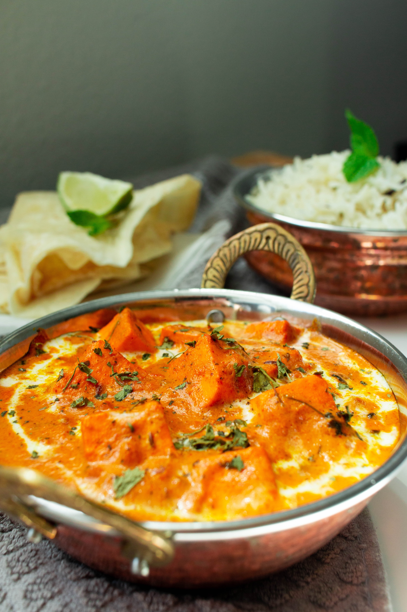

SHAHI PANEER

DESCRIPTION
Shahi Paneer, a regal and indulgent North Indian dish, is a culinary masterpiece that reflects the rich heritage of Mughlai cuisine. The term "Shahi" translates to royal, and this dish lives up to its name with a luxurious combination of creamy paneer (Indian cottage cheese) cubes bathed in a velvety tomato and cashew-based gravy. The sauce is delicately spiced with aromatic ingredients such as cardamom, cloves, and cinnamon, imparting a fragrant and royal essence to the dish. Shahi Paneer is known for its luscious texture and the perfect balance of flavors, making it a favorite at festive occasions and celebratory feasts.
INGREDIENTS
- 250g paneer (cottage cheese), cubed
- 1 cup tomato, chopped
- 1/2 cup cashews, soaked
- 1 cup onions, finely sliced
- 1/4 cup fresh cream
- 2 tbsp ghee (clarified butter)
- 1 tbsp ginger-garlic paste
- 1 tsp green chili, finely chopped
- 1 tsp cumin seeds
- 1 tsp coriander powder
- 1/2 tsp turmeric powder
- 1/2 tsp red chili powder
- 1/4 tsp cardamom powder
- 2-3 cloves
- 1-inch cinnamon stick
- Salt to taste
- Fresh coriander leaves for garnish
STEPS
- In a blender, combine the chopped tomatoes and soaked cashews to form a smooth paste. Set aside.
- Heat ghee in a pan over medium heat. Add cumin seeds and let them splutter. Add finely sliced onions and sauté until golden brown.
- Stir in the ginger-garlic paste and chopped green chili, sautéing until the raw aroma dissipates.
- Add the tomato-cashew paste, coriander powder, turmeric powder, red chili powder, cardamom powder, cloves, and cinnamon stick. Cook the mixture until the oil separates from the masala.
- Pour in fresh cream and stir well, allowing the gravy to thicken. Season with salt according to taste.
- Gently add the paneer cubes to the simmering gravy, ensuring they are coated evenly. Let it cook for a few minutes, allowing the flavors to meld.
- Garnish with fresh coriander leaves and serve the Shahi Paneer hot with naan or steamed rice. This royal dish is sure to captivate your taste buds with its rich, creamy, and aromatic profile. Enjoy the regal experience!